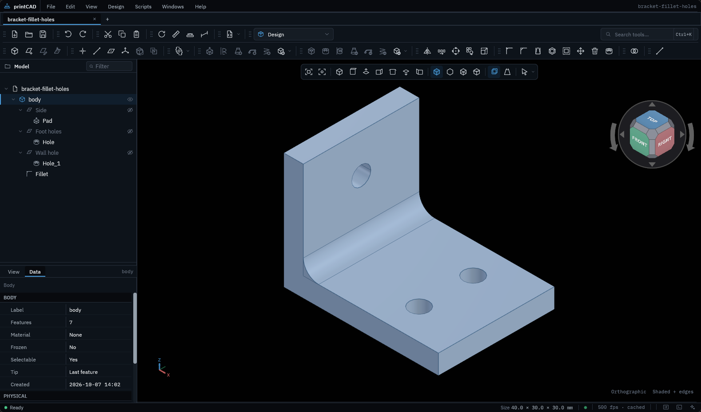
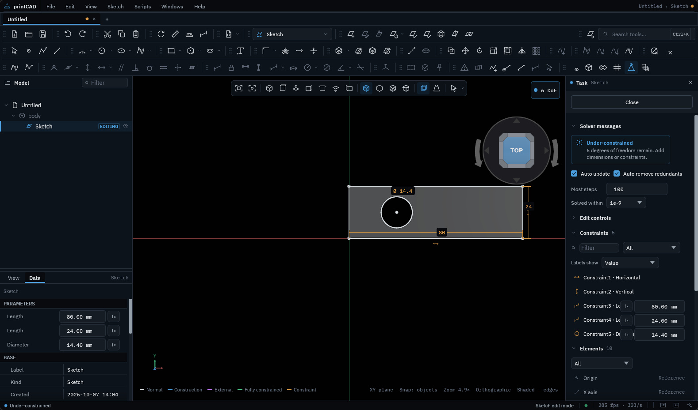
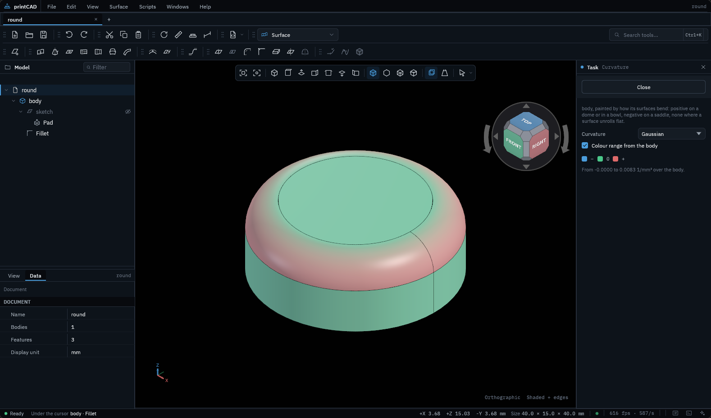

Parametric CAD for 3D-printed parts
Sketch, constrain, pad, fillet and assemble, then send the parts laid out on the bed straight to your slicer. Free and open source, for Linux, Windows and macOS.
Every release: GitHub releases. Early development: the whole path from sketch to printable file works, expect rough edges.

Everything a printed part needs
A feature history you can go back into, sketches that solve as you draw, and the tools that matter once the part leaves the screen.
Constraints solved live
Lines, arcs, circles, ellipses, splines, slots and text, with geometric and dimensional constraints. Solid edges and other sketches come in as references, and generators draw gears, sprockets, shafts and keyways from their numbers.
Features, in order
Pad, pocket, revolve, loft, pipe, helix, holes to thread standards, fillets, chamfers, draft, thickness, patterns and booleans, each editable in the feature tree. Imported solids take features too.
Sheets into solids
Extruded, revolved, filled, lofted and swept surfaces; trimmed, blended, filleted and sewn into solids or thickened, with curvature maps, zebra stripes and a continuity check.
Parts that move
Mates, hinges, sliders, gears and more, motion over time recorded to a picture, interference checks, exploded views and a parts list that counts what to print.
Straight to the slicer
Every part laid flat on the bed and packed, as many as the parts list says; nut traps for captive nuts; the filament each part takes in the material you print with.
Bring parts in, send them out
STEP and IGES as solids with their dimensions and notes; STL, OBJ, 3MF, PLY, glTF and VRML as meshes that convert to solids. Export STEP, STL and 3MF.
Sketches that know what you mean
Endpoints snap together, constraints appear as you draw, and the sketch tells you what is still free. Formulas and variables drive any number, and a configuration table switches a part between sizes.
How editing works

Shapes beyond the box
The Surface workbench builds what a pad cannot: lofts through guide curves, sweeps along two rails, fillets between separate sheets. Check how smoothly they meet before you print.
The Surface guideScriptable, and ready for AI agents
Every tool ends in a command you can record, replay and call from Lua, from the built-in console or from a script file. An AI agent connected to printCAD calls the same commands, finds them by what a task needs, and checks its work with pictures of the model.
local s = pc.sketch.new{plane = "XY"}
pc.sketch.rect{sketch = s, x = 0, y = 0, width = 60, height = 40}
local pad = pc.design.pad{sketch = s, length = 8}
assert(#pc.doc.rebuild() == 0)Lua scripting
A command reference generated from the app itself, every example run by the test suite. Scripting guide
AI assistant
Chat with an agent beside your model, and have it ask before it changes anything. AI guide
Workbench packages
Add workbenches written in Rust and compiled to WebAssembly, installed from a store or a GitHub address, sandboxed. Packages guide
Built from the ground up
printCAD is written in Rust, draws with Vulkan, and models with ogeom, a boundary representation kernel written in pure Rust alongside it. No system CAD libraries, one download per platform. Licensed MIT or Apache-2.0.